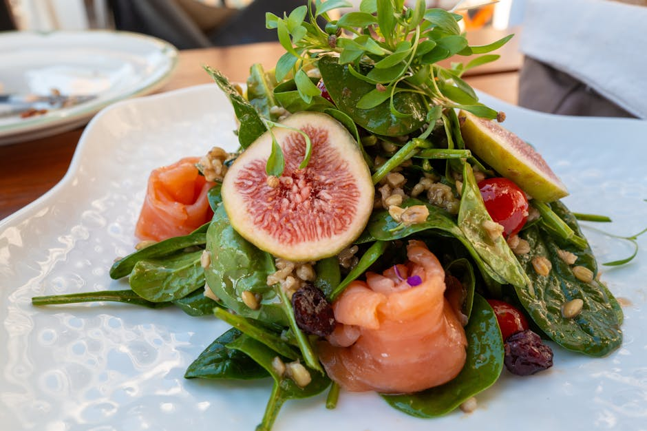

Smoked Trout & Egg Salad Plate

Smoked Trout & Egg Salad Plate delivers 70 g of protein for just 5 g net carbs — no cooking required — just assemble and eat. A filling, macro-balanced lunch that won't spike your blood sugar.
Ingredients
- 150 g Hot-smoked trout fillets
- 4 Large eggs (hard-boiled)
- 40 g Light cream cheese
- 80 g Low-fat cottage cheese
- 100 g Watercress, cucumber & radish
- Lemon, horseradish & dill, to taste
Equipment
- mixing bowl
Method
- Flake the trout onto a plate with the halved eggs.
- Mix the cream cheese with horseradish, lemon and dill for a quick sauce.
- Add the salad and cottage cheese; spoon the sauce over the trout.
Storage & make-ahead
Best assembled fresh. Prep the components up to 2 days ahead, keep chilled, and combine just before eating.
Tip
Trout is rich in omega-3s. A no-cook, picnic-friendly plate.
Dietary swaps
Dairy-free: Light cream cheese → dairy-free cream cheese; Low-fat cottage cheese → dairy-free cottage cheese or blended silken tofu (for lactose intolerance or a dairy-free diet)
Full nutrition (estimated, per serving): 588 kcal · 70 g protein · 5 g net carbs · 32 g fat (12.5 g sat) · 2 g fiber · 6.5 g sugar · 780 mg sodium. Allergens: Milk, Egg, Fish. Macros are realistic estimates from standard food-composition values; brands and portions vary.
Read the full cookbook — 100 recipes, 3 meal plans & the science →